地政学
バチカン市国はローマ市内に囲まれた主権国家で、領土は小さいが聖座外交を通じ世界各地の紛争、人権、宗教間対話に関わる。国境は壁と広場で見え、影響力は大使館網と教会組織へ広がる都市である。今も続く街。

🇻🇦 バチカン市国 / ヨーロッパ / World City Atlas
ローマの内部にある極小の主権国家は、教皇の独立、聖座外交、巡礼、芸術、典礼、観光労働を一つの城壁と広場に凝縮している。
都市の骨格
城壁、広場、聖堂、宮殿、庭園、博物館が極小の領域に集まり、聖座の外交と日々の典礼を世界へ送る。規模の小ささと影響の大きさが、バチカン市国を特異な都市にしている。
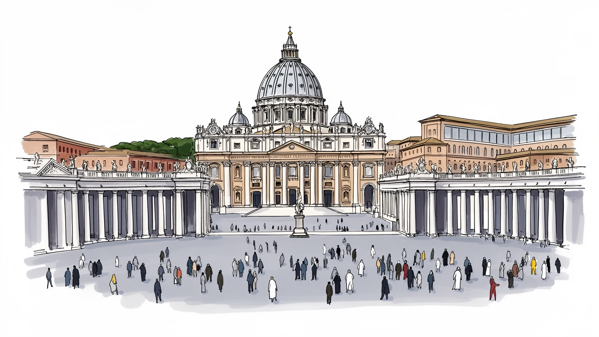
バチカン市国はローマ市内に囲まれた主権国家で、領土は小さいが聖座外交を通じ世界各地の紛争、人権、宗教間対話に関わる。国境は壁と広場で見え、影響力は大使館網と教会組織へ広がる都市である。今も続く街。
経済は製造業ではなく、聖座行政、博物館、出版、記念品、警備、修復、巡礼観光で動く。司祭、修道者、衛兵、学芸員、清掃、案内、技術職が小さな都市を支え、ローマの労働市場とも結びつく。多言語対応も要る。
サン・ピエトロ大聖堂、システィーナ礼拝堂、教皇儀礼、図書館、古代から近代の美術は、信仰と権力の記憶を同時に語る。カトリックの中心でありながら、世界の言語と典礼が交差する場所である。研究も続く場だ。
住民は少なく、日常は聖職者、職員、衛兵、来訪者の流れで成り立つ。広場の列、博物館の予約、ミサ、郵便局、土産店、ローマの交通が重なり、観光地でありながら祈りの場である緊張を保つ。静けさを守る工夫も要る。
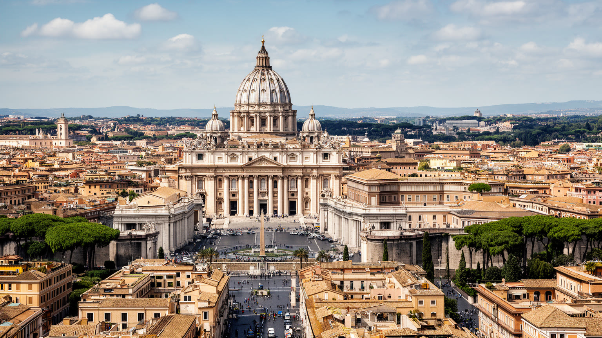
バチカン市国の地理は、面積の小ささだけでなく、境界の意味を読むことで見えてくる。ローマの街路からサン・ピエトロ広場へ歩けば、都市の連続性は自然に感じられるが、城壁、門、警備線、外交上の扱いは、ここが独立国家であることを示す。広場は開かれた前庭であり、壁の内側には宮殿、庭園、博物館、行政施設、礼拝堂が密に重なる。国家の領域は約0.49平方キロメートルしかないが、その狭さは教皇が世俗権力から制度的に独立するための条件になっている。水、電力、交通、廃棄物処理、通勤はローマと結びつくため、完全な孤立はありえない。それでも国境の線は、教会の中心がどの国家にも従属しないという象徴を保つ。都市を歩くと、開放と閉鎖が短い距離で切り替わる。誰もが入れる広場、保安検査を経る聖堂、予約制の博物館、限られた職員だけの内部空間が連続し、主権は地図の色分けではなく動線の管理として体験される。庭園や宮殿の内部は地図上では近くても、制度上は遠い場所であり、その距離感が来訪者に国家の存在を意識させる。広場の一歩手前に立つだけで、巡礼者はローマの街路から世界教会の中心へ入る感覚を持つ。短い距離が政治の厚みを帯びる。境界は日々機能する。バチカンの地理は、小さな面積に国家、宗教、観光、警備、保存が重ねられた都市の縮図である。
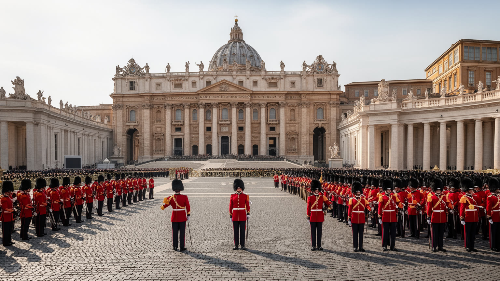
バチカン市国を理解するには、領土としての国家と、世界のカトリック教会を代表する聖座を分けて考える必要がある。市国は教皇の独立を保障するための主権領域であり、聖座は条約、外交使節、国際機関で活動する主体である。ローマ教皇庁の部署は国務、司教任命、典礼、教育、福祉、広報、財務、文化財を扱い、各地の司教団や修道会から届く情報を受け止める。小さな門の内側で決まる判断が、遠い地域の司牧や政治対話に影響する点に、この都市の特異さがある。国家としては軍事力や産業力を持たず、象徴、制度、道徳的発言、長い記憶を使って存在を示す。一方で、宗教的権威が国際政治や社会問題に関わることには緊張もある。教皇の言葉は信徒の励ましになるだけでなく、政府、被害者団体、他宗教、市民社会から批判的に読まれることもある。教皇の選出、枢機卿の会議、各部局の改革は、宗教儀礼であると同時に統治の仕組みでもある。個人のカリスマに見える発信の背後には、文書作成、翻訳、法制度、財務管理、地域教会との調整が積み重なる。教皇の居所、執務、儀礼、会議が近接するため、国家運営と宗教的象徴は日々同じ空間で重なる。距離の短さが判断を速くも重くもする。バチカンは都市というより、主権の最小形と世界制度の接点であり、その小ささが普遍教会の中心として振る舞う根拠になっている。
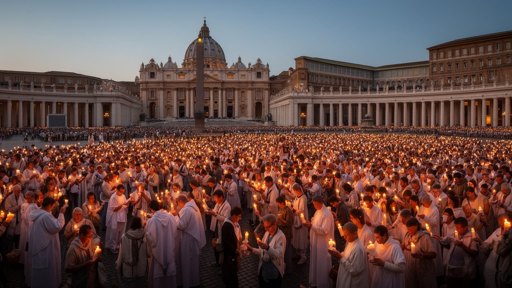
バチカンの日常は、行政の予定だけでなく典礼暦によって動く。待降節、降誕祭、四旬節、復活祭、聖人の祝日、列聖式、枢機卿会議、教皇一般謁見は、都市の時間を世俗のカレンダーとは別のリズムに置く。サン・ピエトロ広場は、巡礼者が同じ方向を向き、声を聞き、沈黙するための大きな装置である。鐘、行列、祭服、聖歌、祝福の身振りは古い形式を保ちながら、放送、配信、多言語字幕、報道を通じて世界へ広がる。多くの来訪者は儀式の細部を完全には理解しないが、立ち上がる、座る、待つ、歌を聞く、手を合わせる行動を通じて空間の意味に触れる。教皇の体調、戦争、災害、移民、貧困、疫病は、祈りの言葉と運営にも影響する。荘厳さは自然に生まれるのではなく、聖歌隊、司式者、警備、翻訳、放送技術、座席配置、医療待機の段取りに支えられる。巡礼団の旗や歌は国境を越えた共同体を可視化し、同じ広場に集まる人びとの背景の違いを示す。祈りの時間は個人の内面だけでなく、群衆が安全に待ち、移動し、互いの場所を譲る公共的な経験にもなる。同じ式に参加しても、地元ローマの信者、遠方の巡礼者、観光客では受け止め方が異なり、その差を広場が抱え込む。今も続く。巡礼儀礼は見世物ではなく、世界の苦難と希望を小さな広場に集め、共同体の記憶を身体に刻む都市の時間である。
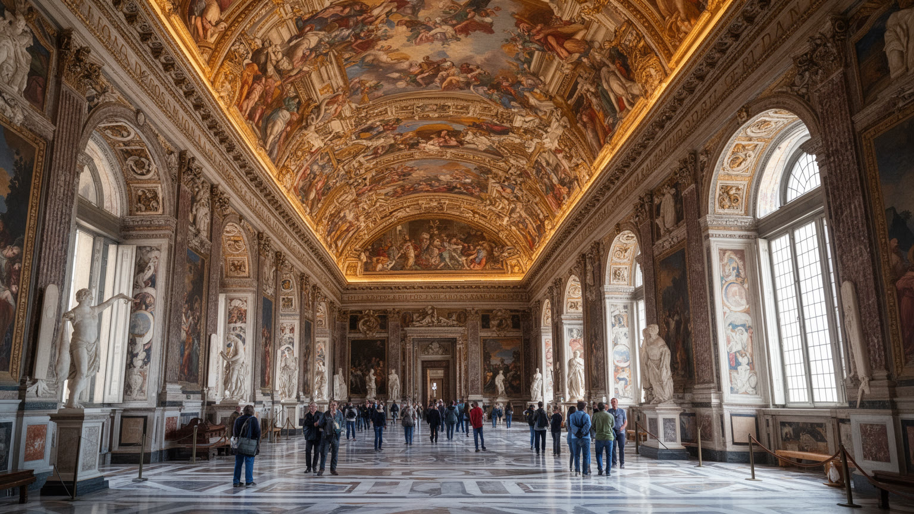
バチカンは信仰の中心であると同時に、世界有数の美術館都市でもある。システィーナ礼拝堂、ラファエロの間、古代彫刻、地図、写本、聖具、装飾は、教会の権威、王侯貴族との関係、学術研究、礼拝の記憶を重ねている。展示されるものは宝物であるだけでなく、誰が何を集め、どの物語として保存してきたのかを問う資料でもある。修復や保存は観光収入に支えられる面があるが、過度な混雑は作品と空間に負担をかける。学芸員、修復士、警備員、清掃員、案内スタッフ、研究者、チケット管理の職員は、目立たない形で文化遺産を日々維持している。宗教画は礼拝のために作られたものでもあり、鑑賞者が美術作品として見る時、祈りの文脈が薄れることもある。保存は過去を凍らせる作業ではない。多言語の説明、入場動線、障害者対応、研究公開、返還をめぐる議論まで含めて、遺産を未来へ運ぶ責任である。湿度、照明、撮影、床の摩耗、列の滞留は作品に直接影響するため、展示は常に都市管理でもある。収蔵庫や研究室には公開されない資料も多く、来訪者が見る名作群は膨大な記憶の一部にすぎない。作品の来歴や収集の背景を問い直すことは、美を損なうのではなく、信仰と権力の歴史をより正確に見る作業になる。見せることと守ることの均衡を取る博物館運営は、宗教都市の文化政策そのものになっている。
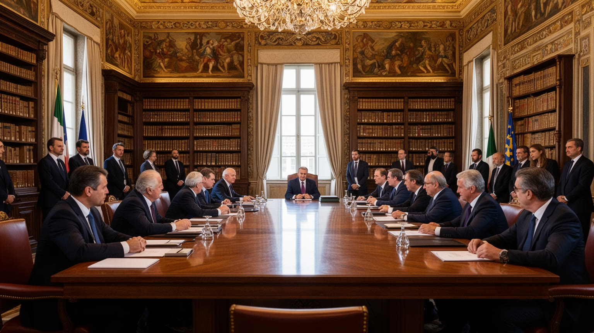
バチカンの国際的な重みは、領土の広さではなく聖座外交の網によって生まれる。各国との外交関係、教皇大使、国際機関での発言、平和仲介、宗教間対話、人道支援への呼びかけは、軍事力や市場規模とは違う種類の影響力である。教皇が訪問する国、発表する文書、面会する指導者、沈黙を破る問題は、信徒だけでなく政府、報道、市民社会に読まれる。移民、貧困、気候変動、核兵器、戦争、死刑、家族、教育、信教の自由をめぐる発言は、地域によって歓迎も反発も招く。聖座は中立を保とうとするが、中立は無関心ではない。紛争地の教会、難民を支える修道会、学校や病院を運営する団体から届く情報は、外交判断の背景になる。宗教的な言葉は政治の妥協を直接作るわけではないが、当事者が対話の余地を探す時の道徳的な基準になることがある。植民地支配の記憶、少数派保護、宗教間の緊張を抱える地域では、バチカンの発言が慎重に受け止められる。外交の力は、発言することだけでなく、いつ沈黙し、どの相手と対話を続けるかにも宿る。各地の司教や修道者は、現地社会の緊張を翻訳してローマへ伝える役割も担う。バチカン外交は目立つ会談だけでなく、長い時間をかけた書簡、非公開の調整、現地教会との連絡で動く。小さな都市の執務室から世界へ伸びるこの網が、バチカンを人口や面積では測れない都市にしている。
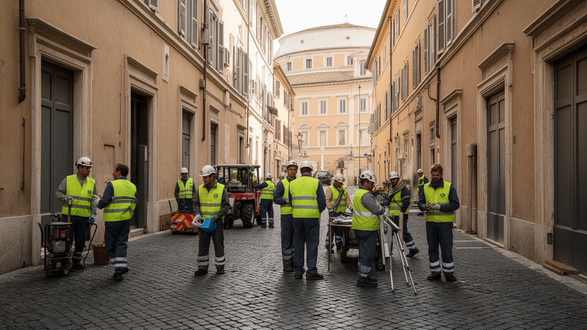
バチカン市国の居住人口はきわめて少なく、多くの働き手はローマ側から通ってくる。聖職者、修道者、スイス衛兵、憲兵、博物館職員、庭師、清掃員、技術者、郵便や印刷の職員、放送や通信の専門家、医療や管理部門の人びとが、巡礼と行政の都市を支えている。国家としては小さくても、毎日入ってくる来訪者の数は住民を大きく上回り、警備、案内、衛生、予約、設備保守は高度な運営を必要とする。生活の単位は一般的な都市住宅地とは異なり、官舎、修道院、宮殿内の執務室、食堂、勤務所、礼拝堂、庭園が近接する。郵便局や薬局、売店は独自の国家性を感じさせるが、買い物、通学、医療、余暇の多くはローマの都市生活と切り離せない。観光客の目には大理石や儀礼が強く映るが、実際の都市運営は早朝の清掃、制服の交代、機械室の点検、雨の日の誘導、混雑時の安全確認で成り立つ。博物館の開館前、広場が人で満ちる前、郵便や通信、庭園管理、祭壇準備、清掃はすでに始まっている。目立たない段取りの連続が、都市の品位と安全を保ち、祈りの時間を支えている。職員の多くは複数言語を使い、宗教的な礼節と観光地の実務を同時に求められる。祝日や大規模行事の前後には勤務時間も変わり、家族生活はローマ側の通勤事情に左右される。日々。信仰の中心も、労働なしには一日も動かない。
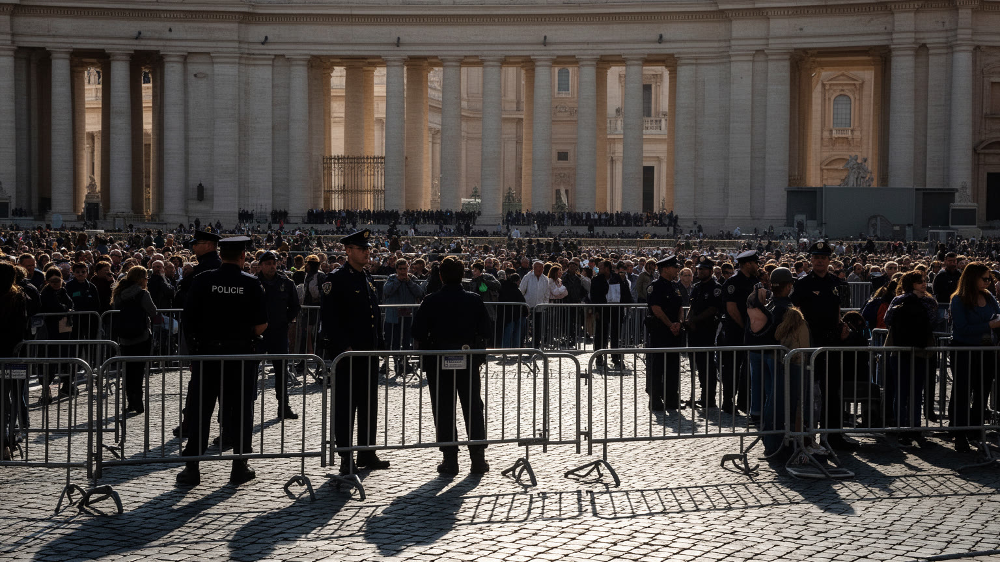
バチカンは世界へ開かれた聖地であるほど、警備と群衆管理の負荷が大きい。サン・ピエトロ広場、聖堂入口、博物館、教皇一般謁見、大規模ミサでは、保安検査、動線分離、救護、避難路、報道対応、VIP警護、巡礼団の誘導が同時に求められる。来訪者は祈り、観光、写真、研究、抗議、偶然の散歩など異なる目的で集まり、速度も言語も体力も違う。聖地としての開放感を失わせずに安全を確保することは、都市運営上の繊細な課題である。過度に閉じれば巡礼の普遍性が損なわれ、緩すぎれば群衆事故や攻撃の危険が増す。警備はスイス衛兵の象徴的な姿だけでなく、憲兵、イタリア側の警察、救急、交通規制、監視設備、事前予約システム、現場スタッフの判断で成り立つ。猛暑や雨、聖年、国際情勢の緊張は負荷をさらに高める。広場で長く待つ人の疲労、車椅子利用者の動線、子ども連れの不安も、信仰体験の一部になる。混雑を抑える案内は単なる効率化ではなく、祈る人が静けさを保ち、働く人が過度な負担を負わないための配慮でもある。観光のピークと典礼の集中が重なる時、都市は歓迎と制限の線を細かく引き直す。日々。現場の小さな判断が、群衆の安心と聖地の静けさを同時に守る。バチカンの警備を読むことは、聖なる空間が現代都市のリスク管理と切り離せないことを知ることである。
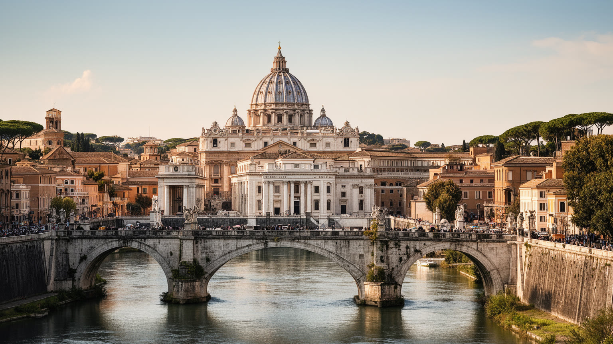
バチカン市国は独立国家でありながら、日常のほとんどをローマの都市圏に支えられている。地下鉄、バス、タクシー、ホテル、飲食店、土産物店、修道会施設、大学、病院、報道機関はローマ側に広がり、巡礼者も職員もその基盤を使ってバチカンへ入る。サン・ピエトロ広場は国家の前庭であると同時に、ローマ市民の散歩道や観光動線の終点でもある。観光シーズンや大規模式典では、宿泊価格、交通規制、警備、清掃、救急体制がローマ全体を巻き込む。逆に、バチカンの存在はローマの都市イメージ、ホテル産業、土産物経済、宗教教育、国際報道を強く支える。独立と依存は矛盾ではなく、この都市の現実である。国境を越える感覚は、空港の入国審査のようなものではなく、石畳の広場、列柱、門、制服、警備線の微妙な変化として現れる。聖職者の養成、巡礼団の宿泊、教会系出版社、宗教用品店はローマ側にも広がり、都市全体がバチカンの周縁として働く。テヴェレ川を越える短い移動にも、古代ローマ、教皇領、近代国家の記憶が重なる。境界の外側にも聖都の仕事が続く。バチカンを単独の島として見ると、働く人の通勤、食材や設備の搬入、来訪者の宿泊、ローマ教区との関係が見えない。ローマの歴史的中心とバチカンは、政治的には別でも、都市生活では一つの連続した場として動いている。
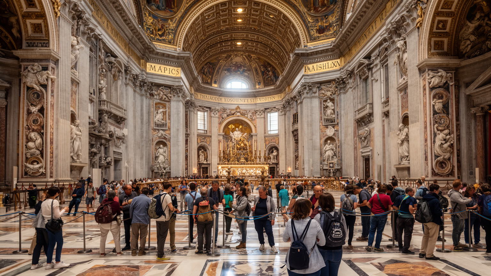
バチカンを訪れる人の多くは、巡礼者であり観光客でもある。ミサに参加するために来る人、美術を見る人、ローマ観光の一日として立ち寄る人、教皇の姿を一目見たい人、学校旅行の生徒、研究者、報道関係者が同じ列に並ぶ。予約制の博物館、聖堂入口の保安検査、広場の群衆整理、土産店や飲食店、地下鉄とバス、ローマ側の宿泊施設は、聖地を現代観光の経済に組み込む。巡礼は消費とは違う深さを持つが、移動、宿泊、食事、ガイド、記念品を伴うため、都市の産業にもなる。観光化は宗教空間を開く一方で、祈りの静けさを失わせることがある。写真を撮る自由、服装規定、礼拝中のマナー、障害のある来訪者の移動、多言語案内は、信仰と観光を両立させる細かな課題である。短時間で名所を回る旅程は、聖堂の祈りや博物館の作品を消費の速度へ押し込むことがある。反対に、長く滞在し、式に参加し、ローマの教会や修道会施設も歩くと、都市の宗教的な厚みが見えてくる。ガイドの説明、店での買い物、沈黙を守る態度は、訪問者が聖地とどのような関係を結ぶかを形づくる。一歩の遅さも意味を持つ。バチカンの動線は短いが密度が高く、数百メートルの移動に世界中の言語、期待、疲労が詰まる。聖地としての尊厳を保ちながら、誰にでも開かれた場所であり続けることが、バチカン観光の核心である。
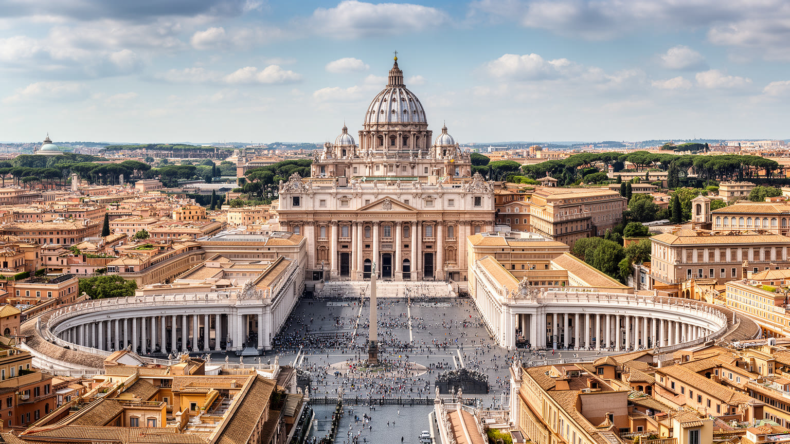
バチカン市国は、人口や面積で測れば世界でも最小級の都市国家である。しかし都市として読むと、そこには主権、宗教、外交、芸術、労働、観光、警備、ローマの生活圏が高密度に重なっている。サン・ピエトロ大聖堂の壮麗さだけを見れば、バチカンは過去の権威を保存する場所に見える。だが実際には、教皇の言葉が戦争や移民をめぐる議論に届き、博物館の混雑が保存政策を変え、巡礼者の流れがローマの交通と宿泊を動かし、職員の日々の仕事が典礼の荘厳さを支えている。小さな都市は閉じた舞台ではなく、世界中の教区、学校、病院、修道会、信徒、批判者、研究者とつながる結節点である。同時に、教会内の虐待問題、財務の透明性、女性の役割、性的少数者への姿勢、文化財をめぐる議論は、聖地の輝きの背後にある責任を問い続ける。美術と信仰の感動だけでなく、制度がどう謝罪し、改革し、弱い立場の人を守るかも都市の評価に含まれる。訪問者が何を見て、何を見落とすかによって、バチカンは記念写真の背景にも、現代世界を映す鏡にもなる。余韻も残る場。バチカンを深く理解するには、祈りの静けさと群衆のざわめき、城壁の内側とローマの通り、芸術の美しさと制度改革の重さを同じ地図に置く必要がある。極小の領域に世界制度が宿るからこそ、この都市は規模を超えた重みを持つ。